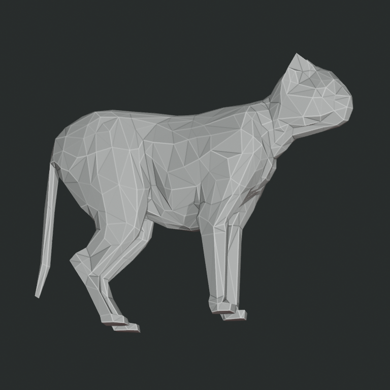
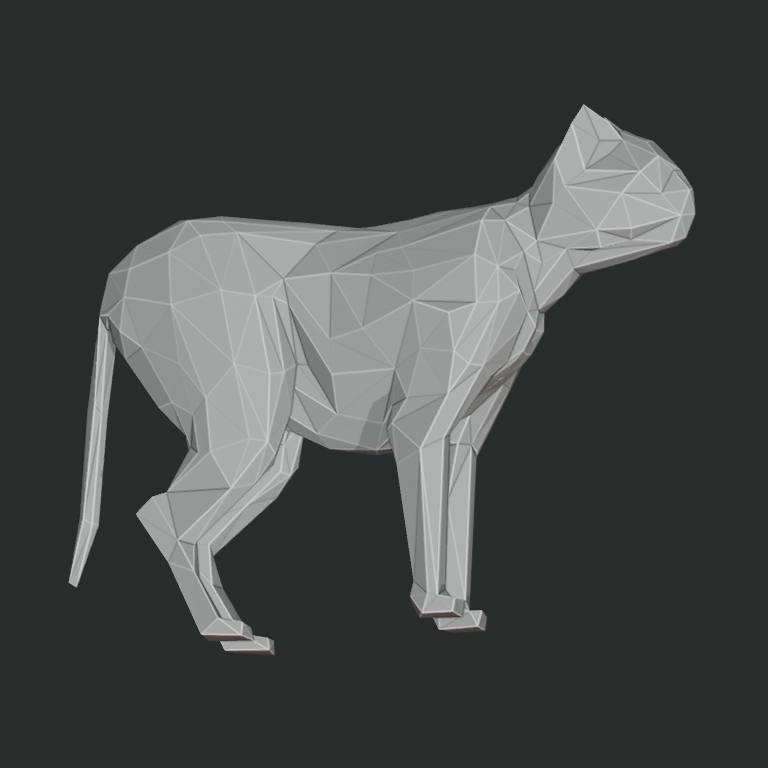
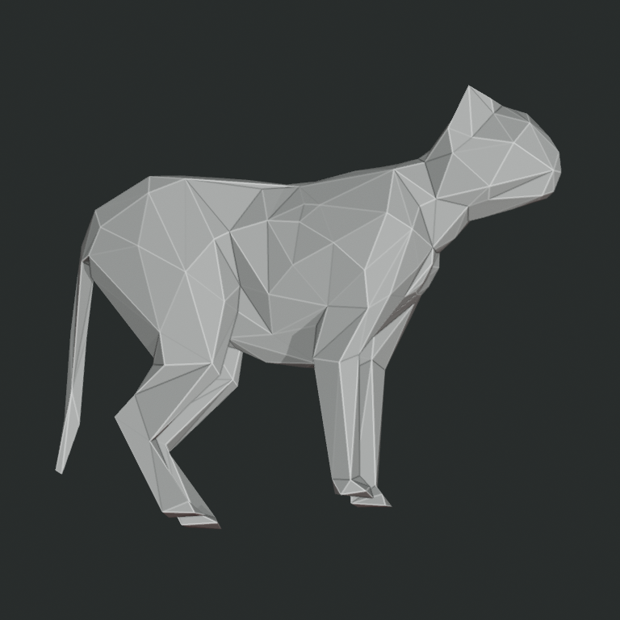
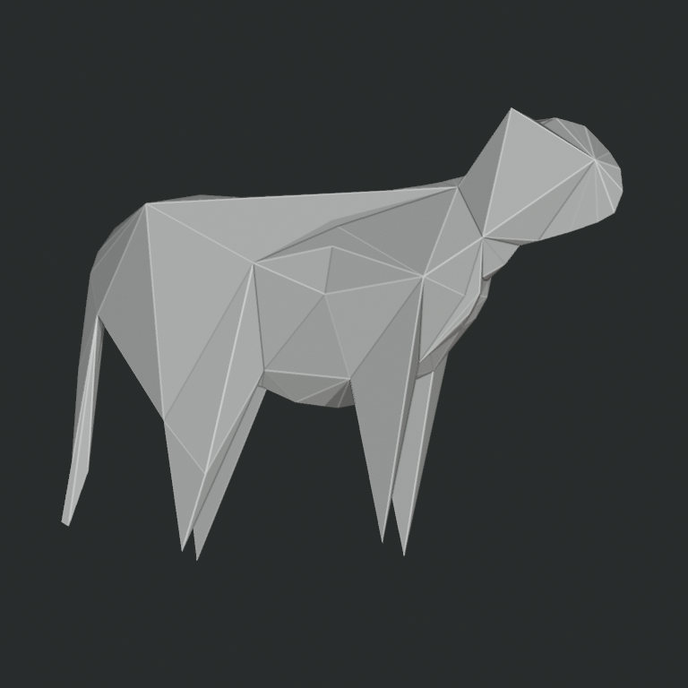

Authored envelope resolution ladder
Same evaluated source, transform, material, camera, and lighting. No generator outputs.




Same evaluated source, transform, material, camera, and lighting. No generator outputs.



